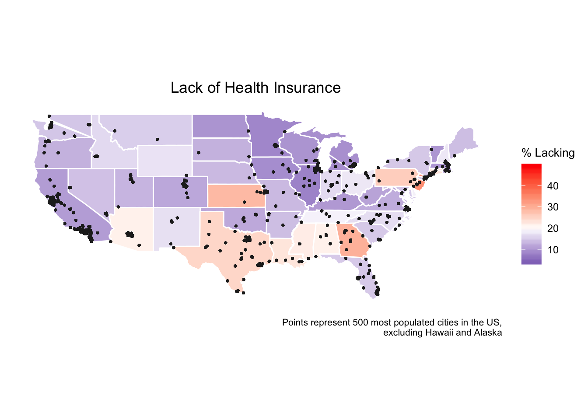
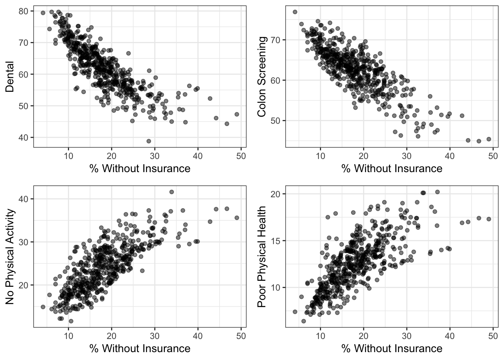

Unlike many other developed nations, the US does not have a uniform health system or universal healthcare coverage, and prior to the passage of the Affordable Care Act in 2010, did not require individuals to have any sort of healthcare coverage. As a result, there are still a number of uninsured people in the US, as seen in the map below.

The prevalence of noninsured individuals is noteworthy for us because an analysis of correlations between the noninsured and health practices shows a significant linear relationship between all practices except for one. Proactive health practices – such as screening tests – showed a negative correlation with lack of insurance, meaning the higher the prevalence of uninsured, the lower the prevalence of these proactive practices.
| Health Practice | Linear Association? | Direction of Association | p-value |
|---|---|---|---|
| Health Checkup | No | NA | 0.711 |
| Cholestrol Screening | Yes | Negative | <2e-16 |
| Colon Screening | Yes | Negative | <2e-16 |
| Dental | Yes | Negative | <2e-16 |
| COREM | Yes | Negative | <2e-16 |
| COREW | Yes | Negative | <2e-16 |
| LPA | Yes | Positive | <2e-16 |
| Mammogram | Yes | Negative | <2e-16 |
| Pap Test | Yes | Negative | <2e-16 |
| Poor Physical Health | Yes | Positive | <2e-16 |
This preliminary analysis shows that health insurance status could be used as a predictor of certain health practices. Any reliable statistical model would need to factor in multiple variables but here we can see some of the associations mentioned (note that all values presented are prevalences):
